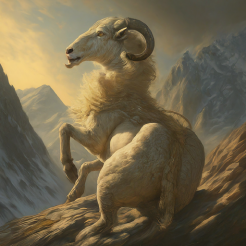
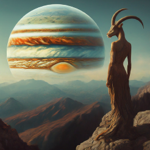
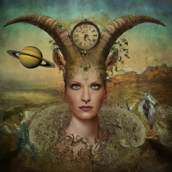

*Hover to see who has these Capricorn Placements*
People with Sun in Capricorn are known for their discipline and ambition.


The Moon in Capricorn signifies emotional resilience and practicality.

Mercury in Capricorn enhances logical thinking and communication skills.

Individuals with Venus in Capricorn value stability and commitment in relationships.

Mars in Capricorn signifies determination and a disciplined approach to achieving goals.

Jupiter in Capricorn encourages practical growth and a focus on long-term success.

Saturn in Capricorn emphasizes structure, discipline, and responsibility.

Uranus in Capricorn encourages innovative approaches to tradition.

Neptune in Capricorn blends dreams with a grounded sense of reality.


Pluto in Capricorn signifies transformation through discipline and control.

People with Capricorn rising often appear serious and goal-oriented, exuding an aura of authority.